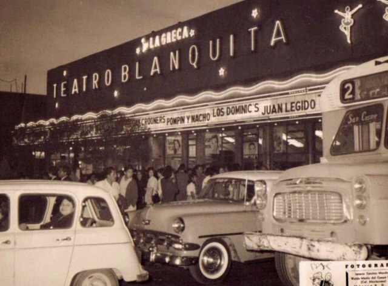

Antes de la Construcción
El proyecto del Metro de la Ciudad de México no fue una idea de la noche a la mañana. Varias décadas de crecimiento urbano y problemas de tráfico obligaron a buscar una solución subterránea.
Puntos clave:
- Crecimiento Demográfico: La CDMX experimentó una explosión poblacional a mediados del siglo XX.
- Crisis de Transporte: El sistema de tranvías y autobuses era insuficiente y colapsaba las calles.
- Estudios de Viabilidad: Desde los años 40 se consideraron proyectos de tren subterráneo.
- Decisión Final: El proyecto fue impulsado por el Regente Alfonso Corona del Rosal a mediados de los años 60.
